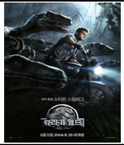
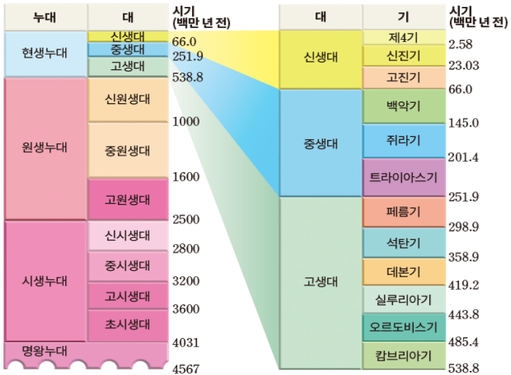
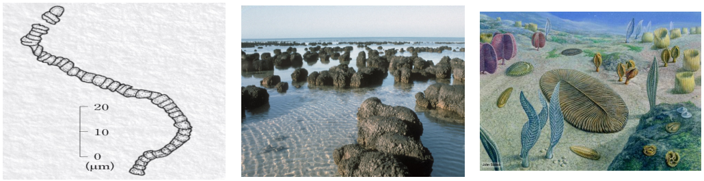
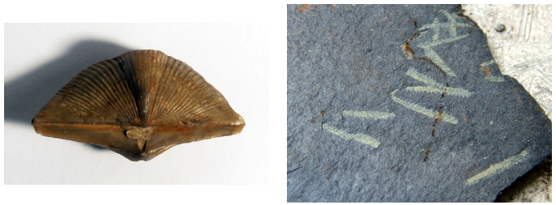
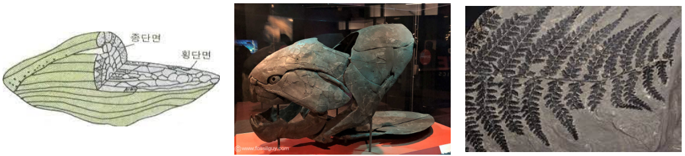
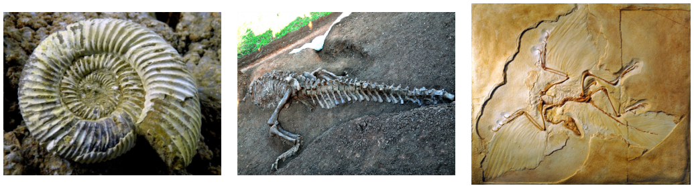
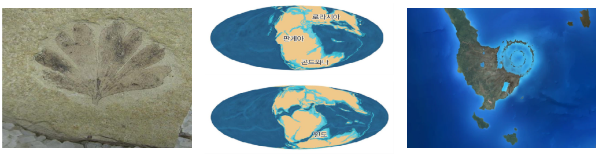
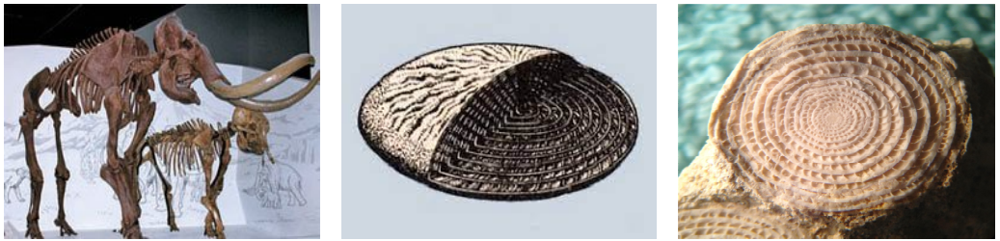
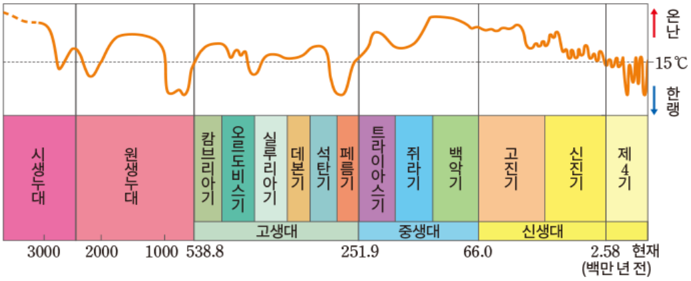

학습 목표 (Learning Objectives)
- ✓지질 시대를 누대·대·기 수준에서 구분하고 구분 기준을 설명할 수 있다.
- ✓지층과 화석, 고기후 연구 자료를 통해 지질 시대의 수륙 분포, 기후 및 생물 진화 과정을 해석할 수 있다.
핵심 개념 체크리스트
학습을 마친 개념은 직접 체크해보세요!
2026 사대부고 고2 지구과학 자체 교재 원문 기반
동기 유발 · 생각해보기
수업 시작 전 핵심 질문
Q. 영화 <쥐라기 월드>에는 거대한 공룡들이 울창한 양치·겉씨식물 숲을 누비는 장면이 나온다. 과학자들은 인류가 태어나기 훨씬 전인 중생대의 기온과 식생, 공룡의 생태 환경을 어떻게 복원할 수 있었을까?


💡 먼저 스스로 이유를 추론해 본 뒤 버튼을 눌러 확인해보세요!
✨ 과학적 해설 및 모범 답안
지층에서 발견되는 표준 화석으로 지질 시대를 결정하고, 환경 변화에 민감한 시상 화석(산호, 고사리 등)과 빙하 코어, 꽃가루 화석, 산소 동위원소비($^{18}\text{O}/^{16}\text{O}$) 등을 분석하여 당시의 기온과 대기 조성, 생태계를 과학적으로 복원합니다.
핵심 개념 1
1. 지질 시대의 구분과 화석 (Fossils)
(1) 지질 시대의 구분 단위와 표준 화석 vs 시상 화석
- •지질 시대 구분 기준: 약 46억 년의 지구 역사 중 생물계의 급격한 변화(대멸종과 대번성) 및 대규모 지각 변동(부정합)을 기준으로 누대(Eon: 시생·원생·현생 누대) ➔ 대(Era: 고생대·중생대·신생대) ➔ 기(Period)로 구분한다.
- •시간 길이 비교: 선캄브리아 시대(시생+원생 누대, 약 88.2%) >> 고생대 > 중생대 > 신생대
- •표준 화석 (시대 지시): 생존 기간이 짧고, 분포 면적이 넓으며, 개체 수가 많은 화석 (삼엽충, 필석, 갑주어, 방추충, 암모나이트, 공룡, 시조새, 화폐석, 매머드)
- •시상 화석 (환경 지시): 생존 기간이 길고, 환경 변화에 민감하여 특정 환경에서만 서식하는 화석
▸ 산호 화석: 따뜻하고 수심이 얕으며 맑은 바다
▸ 고사리(양치식물) 화석: 온난 습윤한 육지(늪지)

" class="max-h-72 w-auto object-contain rounded-lg group-hover:scale-[1.02] transition duration-300 cursor-zoom-in" onclick="openLightbox(this.src, '교재 그림: <지질 시대의 구분 (누대 - 대 - 기 및 절대 연령)>')" loading="lazy" />
핵심 개념 2
2. 시대별 환경(수륙 분포·기후)과 생물의 진화
(1) 선캄브리아 시대 ~ 고생대 ~ 중생대 ~ 신생대 핵심 총정리
- •각 지질 시대의 기후(빙하기 유무), 수륙 분포(판게아 형성·분리), 생물 최초 출현 및 번성 시기를 정확히 연결해야 한다.
| 지질 시대 | 수륙 분포 및 기후 특징 | 주요 생물 진화 및 표준 화석 |
|---|---|---|
| 선캄브리아 시대 (46억 ~ 5.41억 년 전) | • 원생 누대 말 초대륙 로디니아 형성 • 대체로 온난했으나 원생 누대에 빙하기 존재 | • 약 35억 년 전 바다에서 남세균(사이아노박테리아) 광합성 시작 ➔ 스트로마톨라이트 형성 및 산소 공급 • 원생 누대 말 최초의 다세포 생물인 에디아카라 동물군 출현 (단단한 골격 X, 육상 생물 X) |
| 고생대 (5.41억 ~ 2.52억 년 전) 캄-오-실-데-석-페 | • 말기(페름기)에 초대륙 판게아 형성 • 중기·말기에 빙하기 존재 | • 캄브리아기: 삼엽충, 완족류 대번성 • 오르도비스기: 필석, 최초의 척추동물(무악어류) 출현 • 실루리아기: 오존층 형성 ➔ 최초의 육상 식물(쿡소니아) 출현, 갑주어 • 데본기: 어류의 시대, 최초의 양서류 출현 • 석탄기: 방추충(푸줄리나), 양치식물(석탄층 형성)과 양서류 번성, 파충류 출현 • 페름기: 겉씨식물 출현, 판게아 형성 등으로 고생대 말 최대 규모 대멸종 |
| 중생대 (2.52억 ~ 0.66억 년 전) 트-쥐-백 | • 트라이아스기 말부터 판게아 분리 시작 (대서양·인도양 형성, 로키·안데스 산맥 형성) • 전 기간 온난 (빙하기가 전혀 없었음! ⭐) | • 트라이아스기: 암모나이트·공룡·겉씨식물 번성 시작, 최초의 포유류 출현 • 쥐라기: 공룡·암모나이트·겉씨식물 전성기, 시조새 출현 • 백악기: 속씨식물 출현, 백악기 말 소행성 충돌(칙슐루브)로 공룡·암모나이트 대멸종 |
| 신생대 (0.66억 년 전 ~ 현재) 고진기-신진기-제4기 | • 인도 대륙과 유라시아 대륙 충돌로 히말라야·알프스 산맥 형성 • 고진기·신진기는 온난, 제4기에 빙하기(4회)와 간빙기(3회) 반복 | • 고진기·신진기: 바다에 화폐석 번성, 육지에 포유류와 속씨식물 번성 • 제4기: 매머드 번성, 인류의 조상 출현 |

" class="max-h-72 w-auto object-contain rounded-lg group-hover:scale-[1.02] transition duration-300 cursor-zoom-in" onclick="openLightbox(this.src, '교재 그림: <선캄브리아 시대: 시아노박테리아, 스트로마톨라이트, 에디아카라 동물군>')" loading="lazy" />
" class="max-h-72 w-auto object-contain rounded-lg group-hover:scale-[1.02] transition duration-300 cursor-zoom-in" onclick="openLightbox(this.src, '교재 그림: <고생대 표준 화석 1: 삼엽충, 완족류, 필석>')" loading="lazy" />
" class="max-h-72 w-auto object-contain rounded-lg group-hover:scale-[1.02] transition duration-300 cursor-zoom-in" onclick="openLightbox(this.src, '교재 그림: <고생대 표준 화석 2: 방추충(석탄기), 갑주어, 고사리>')" loading="lazy" />
" class="max-h-72 w-auto object-contain rounded-lg group-hover:scale-[1.02] transition duration-300 cursor-zoom-in" onclick="openLightbox(this.src, '교재 그림: <중생대 표준 화석: 암모나이트, 공룡, 시조새>')" loading="lazy" />
" class="max-h-72 w-auto object-contain rounded-lg group-hover:scale-[1.02] transition duration-300 cursor-zoom-in" onclick="openLightbox(this.src, '교재 그림: <겉씨식물 화석, 중생대 대륙 분포, 칙슐루브 충돌 크레이터>')" loading="lazy" />
" class="max-h-72 w-auto object-contain rounded-lg group-hover:scale-[1.02] transition duration-300 cursor-zoom-in" onclick="openLightbox(this.src, '교재 그림: <신생대 표준 화석: 매머드, 화폐석>')" loading="lazy" />
핵심 개념 3
3. 고기후 연구 방법과 지질 시대의 기후 변화
(1) 고기후 연구 방법 (교재 p.43~44)
- •빙하 코어 연구: 빙하 속 미세 공기 방울을 분석하여 과거 대기 조성($\text{CO}_2$ 농도 등)을 알아내고, 빙하 얼음의 산소 동위원소비($^{18}\text{O}/^{16}\text{O}$)를 측정해 기온을 추정한다. (기온이 높을수록 빙하 속 $^{18}\text{O}/^{16}\text{O}$ 비가 높고, 해수나 유공충 화석 속 $^{18}\text{O}/^{16}\text{O}$ 비는 낮다!)
- •나무의 나이테: 온난 다습할수록 세포 분열이 활발해 나이테 간격이 넓고 밀도가 작다.
- •꽃가루 화석, 산호의 성장선, 동굴 생성물(종유석·석순), 시상 화석 등을 종합하여 지질 시대의 기온 변화를 복원한다.

" class="max-h-72 w-auto object-contain rounded-lg group-hover:scale-[1.02] transition duration-300 cursor-zoom-in" onclick="openLightbox(this.src, '교재 그림: <지질 시대 동안의 지구 평균 기온 변화와 빙하기(선캄브리아·고생대·신생대 제4기)>')" loading="lazy" />
Interactive Checkpoints
클릭하면 교재 빈칸 정답과 해설이 나타납니다
단원 개념 적용하기 & 확인 문제
Q1
교재 p.41~42 핵심 체크: 육상 식물이 최초로 출현한 시기와 그 배경은 무엇이며, 지질 시대 중 빙하기가 한 번도 없었던 시대는 언제인가?
모범 답안 및 해설
광합성으로 대기 중 산소가 축적되어 고생대 실루리아기에 오존층이 형성되면서 자외선이 차단되어 최초의 육상 식물(쿡소니아)이 출현했습니다. 또한 빙하기가 전혀 없었던 시대는 중생대입니다.
Q2
교재 p.43 확인: 양치식물→겉씨식물→속씨식물, 어류→양서류→파충류→포유류의 번성 시기를 지질 시대(대)와 연결하시오.
모범 답안 및 해설
• 고생대: 어류·양서류 번성, 양치식물 번성• 중생대: 파충류(공룡) 번성, 겉씨식물 번성
• 신생대: 포유류 번성, 속씨식물 번성